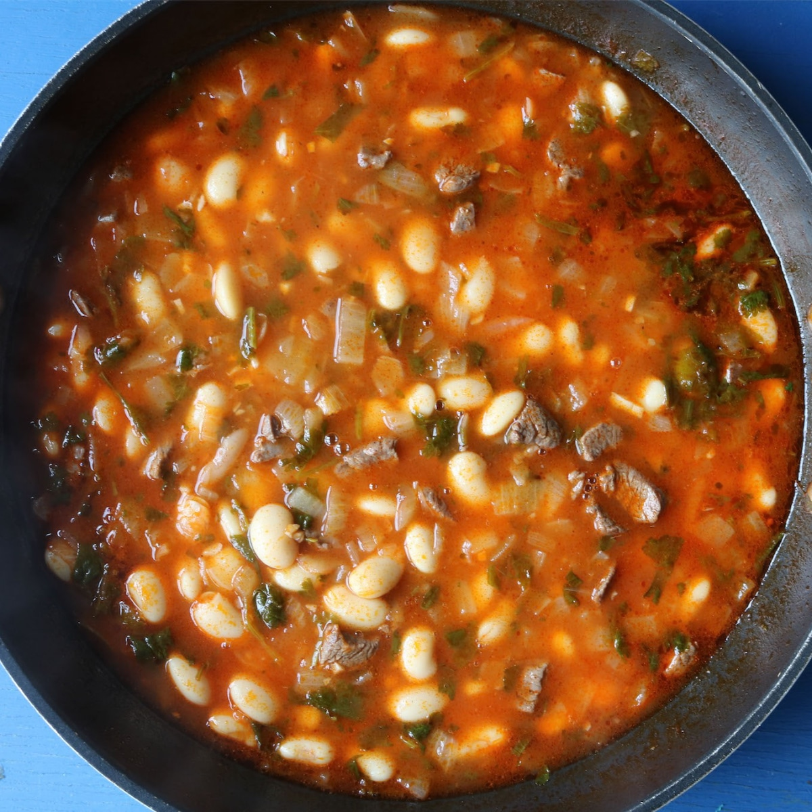

How To Make Fasoolia Betha That's Better Than YO BABA'S!

Fasoolia Betha Stew
This dish is a tomato based stew made using white beans and lamb or beef, but can also be made vegetarian.
Best served with rice; this dish will sooth any soul and make a magic carpet of your sheets!
Ingredients
- Olive Oil
- Tomato Paste
- White Northern Beans
- Lamb or Beef
- Parsley
- Onion
- Beef Stock or Water
- Rice
- Salt
- Gas X
- Your Appetite!
Steps
- Cook lamb ahead of time and set aside.
- In a large pot, heat oil over medium heat.
- Add chopped onion and simmer for a few minutes until aromatic.
- Add tomato paste and stir. Simmer until dark red.
- Turn heat to medium high. Add stock or water and bring to boil.
- Add beans and mix well. Allow to simmer for a 45 minutes to an hour.
- Add meat and salt 10 minutes before serving.
- Add fresh parsley immediately before serving.
- Taste and adjust seasonings.
- Simmer until aromatic and oil is visible on top of stew. Beans will be soft, but not broken.
- Serve in a separate bowl and add on top of rice.
- Enjoy!